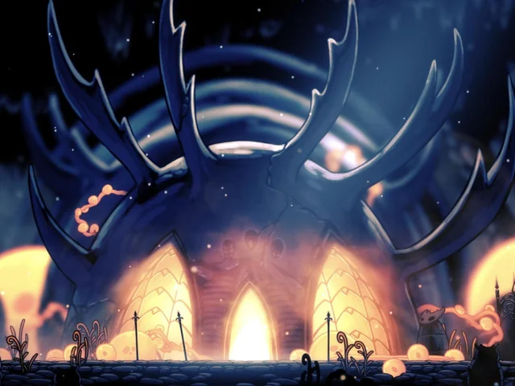
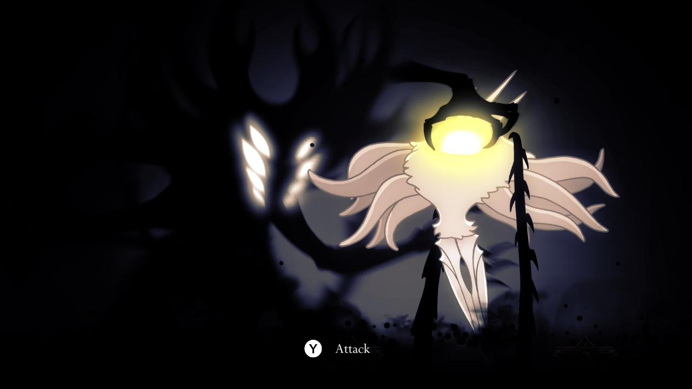

La Infección

La Luz Olvidada
La Infección no es una enfermedad biológica común, sino una manifestación de la ira de Destello (The Radiance). Cuando el Rey Pálido llegó a Hallownest y otorgó conciencia a los insectos, estos olvidaron a su antigua deidad. Como represalia, ella comenzó a aparecer en sus sueños, susurrando y prometiendo unidad, hasta que esa luz "quemó" sus mentes desde adentro.
El Aroma del Destino
Se dice que la Infección tiene un olor dulce y seductor. Los insectos se ven atraídos por este aroma en sus sueños antes de perder completamente su voluntad y convertirse en esclavos de la mente de colmena.
Síntomas y Transformación
La Infección se manifiesta físicamente de formas aterradoras. El cuerpo del huésped ya no le pertenece, convirtiéndose en un recipiente para la luz.
Ojos Naranjas
El primer signo visible. El iris brilla con una luz naranja intensa, indicando que la voluntad de Destello ha reemplazado a la del individuo.
Protuberancias y Quistes
En etapas avanzadas, el cuerpo se hincha con burbujas de gas naranja altamente volátil y explosivo.
Los insectos infectados pierden el habla, la memoria y la capacidad de sentir dolor, actuando únicamente para proteger la fuente de la luz o expandir la plaga a otros seres no infectados.
La Caída de los Cruces
Uno de los momentos más impactantes en el juego ocurre tras derrotar a un Soñador o adquirir las Alas de Monarca. Los Cruces Olvidados se transforman en los Cruces Infectados.
Los caminos se bloquean con masas de carne naranja, los enemigos explotan al morir y la atmósfera se vuelve asfixiante. Es la prueba definitiva de que los sellos del Rey están fallando y que Destello está recuperando su reino.

El Caso de los Traidores
No todos los insectos fueron infectados contra su voluntad. El Señor de los Traidores y su tribu de mantis abrazaron la Infección voluntariamente para obtener una fuerza salvaje que sus cuerpos normales no podían alcanzar.
Reanimación de los Caídos
La Infección es tan poderosa que puede reanimar cadáveres. El Receptáculo Roto es el ejemplo más claro: un cuerpo vacío que es controlado como una marioneta por parásitos infectados para impedir que el Caballero avance hacia el Abismo.
